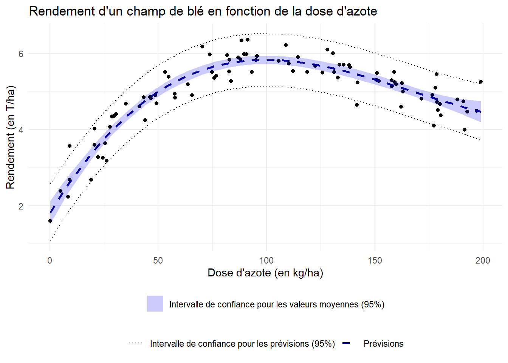

Dose_Azote Rendement
Min. : 0.125 Min. :1.600
1st Qu.: 49.094 1st Qu.:4.571
Median : 94.128 Median :5.197
Mean :101.073 Mean :4.946
3rd Qu.:153.179 3rd Qu.:5.554
Max. :198.854 Max. :6.352
Un modèle linéaire semble-t-il adapté afin d’expliquer le rendement des champs ?
Réponse
Pour répondre à cette question, on va :
tracer le nuage de points donnant le rendement dans un champ en fonction de la dose d’azote;
calculer le coefficient de corrélation entre les deux variables.
library(ggplot2)ggplot(azote_ble) +aes(x=Dose_Azote,y=Rendement)+geom_point(color="skyblue")+theme_minimal()+labs(x="Dose d'azote (en kg/ha)",y="Rendement (en T/ha)",title ="Rendement du champ en fonction de la dose d'azote")
Pearson's product-moment correlation
data: azote_ble$Dose_Azote and azote_ble$Rendement
t = 4.4398, df = 90, p-value = 2.55e-05
alternative hypothesis: true correlation is not equal to 0
95 percent confidence interval:
0.2398778 0.5784672
sample estimates:
cor
0.42387
Ici, le coefficient de corrélation est significativement non nul. Néanmoins, la forme du nuage de points ne montre absolument pas de tendance linéaire, mais plutôt une tendance polynomiale.
Un modèle linéaire ne semble donc pas adapté.
On se propose de modéliser le rendement des champs par un modèle polynomial de degré 4 :
\[ Y = \beta_0 + \beta_1 X + \beta_2 X^2 + \beta_3 X^3 +\beta_4X^4+ \varepsilon\] où :
\(X\) désigne la dose d’azote apportée (en kg/ha);
\(Y\) désigne le rendement du champ (en T/ha);
\(\varepsilon \sim \mathcal{N}(0,\sigma^2)\) désigne un bruit gausssien.
Modifier le jeu de données initial afin de faire apparaître les variables \(X^2\), \(X^3\) et \(X^4\).
Voir le code
library(tidyverse)
── Attaching core tidyverse packages ──────────────────────── tidyverse 2.0.0 ──
✔ dplyr 1.1.4 ✔ readr 2.1.5
✔ forcats 1.0.0 ✔ stringr 1.5.2
✔ lubridate 1.9.4 ✔ tibble 3.3.0
✔ purrr 1.1.0 ✔ tidyr 1.3.1
── Conflicts ────────────────────────────────────────── tidyverse_conflicts() ──
✖ dplyr::filter() masks stats::filter()
✖ dplyr::lag() masks stats::lag()
ℹ Use the conflicted package (<http://conflicted.r-lib.org/>) to force all conflicts to become errors
À l’aide de la fonction lm(), ajuster un modèle polynomial aux données.
Voir le code
lm_ble <-lm(data=azote_ble,formula = Rendement~.)
Quel est le pourcentage de variance expliquée par le modèle ? Certains coefficients semblent-ils non significatifs ?
Réponse
On dresse un résumé du modèle :
summary(lm_ble)
Call:
lm(formula = Rendement ~ ., data = azote_ble)
Residuals:
Min 1Q Median 3Q Max
-0.78238 -0.24016 0.02354 0.17685 0.90809
Coefficients:
Estimate Std. Error t value Pr(>|t|)
(Intercept) 1.954e+00 1.966e-01 9.940 5.36e-16 ***
Dose_Azote 8.039e-02 1.305e-02 6.163 2.17e-08 ***
Dose_Azote2 -3.752e-04 2.590e-04 -1.448 0.151
Dose_Azote3 -9.330e-07 1.920e-06 -0.486 0.628
Dose_Azote4 5.639e-09 4.729e-09 1.192 0.236
---
Signif. codes: 0 '***' 0.001 '**' 0.01 '*' 0.05 '.' 0.1 ' ' 1
Residual standard error: 0.3424 on 87 degrees of freedom
Multiple R-squared: 0.8784, Adjusted R-squared: 0.8728
F-statistic: 157.1 on 4 and 87 DF, p-value: < 2.2e-16
Ici, les coefficients associés aux puissances 2, 3 et 4 de la dose d’azote ne semblent, à première vue, pas significatifs. On va voir plus loin que ce n’est pas si clair…
Effectuer un ou plusieurs tests de modèles emboîtés afin de déterminer les coefficients significativement non nuls du modèle. Quel modèle est finalement retenu ?
Réponse
On va tout d’abord tester la nullité des coefficients \(\beta_2\), \(\beta_3\) et \(\beta_4\) associés aux puissances 2, 3 et 4 de la dose d’azote.
Analysis of Variance Table
Model 1: Rendement ~ Dose_Azote + Dose_Azote2 + Dose_Azote3 + Dose_Azote4
Model 2: Rendement ~ Dose_Azote
Res.Df RSS Df Sum of Sq F Pr(>F)
1 87 10.201
2 90 68.806 -3 -58.605 166.61 < 2.2e-16 ***
---
Signif. codes: 0 '***' 0.001 '**' 0.01 '*' 0.05 '.' 0.1 ' ' 1
D’après ce test, au moins l’un des coefficients \(\beta_2, \beta_3\) ou \(\beta_4\) est non nul. Pour déterminer lesquels, on va ensuite tester la nullité simultanée de \(\beta_3\) et \(\beta_4\).
Call:
lm(formula = Rendement ~ Dose_Azote + Dose_Azote2, data = azote_ble)
Residuals:
Min 1Q Median 3Q Max
-1.0291 -0.2481 -0.0511 0.2438 1.2901
Coefficients:
Estimate Std. Error t value Pr(>|t|)
(Intercept) 2.381e+00 1.291e-01 18.44 <2e-16 ***
Dose_Azote 6.130e-02 2.976e-03 20.60 <2e-16 ***
Dose_Azote2 -2.684e-04 1.429e-05 -18.78 <2e-16 ***
---
Signif. codes: 0 '***' 0.001 '**' 0.01 '*' 0.05 '.' 0.1 ' ' 1
Residual standard error: 0.3946 on 89 degrees of freedom
Multiple R-squared: 0.8347, Adjusted R-squared: 0.831
F-statistic: 224.8 on 2 and 89 DF, p-value: < 2.2e-16
anova(lm_ble,mod2)
Analysis of Variance Table
Model 1: Rendement ~ Dose_Azote + Dose_Azote2 + Dose_Azote3 + Dose_Azote4
Model 2: Rendement ~ Dose_Azote + Dose_Azote2
Res.Df RSS Df Sum of Sq F Pr(>F)
1 87 10.201
2 89 13.861 -2 -3.6599 15.607 1.614e-06 ***
---
Signif. codes: 0 '***' 0.001 '**' 0.01 '*' 0.05 '.' 0.1 ' ' 1
On voit ici que le coefficient \(\beta_2\) est significativement non nul. De plus, l’un des deux coefficients \(\beta_3\) ou \(\beta_4\) est aussi non nul. On va tester lequel.
Call:
lm(formula = Rendement ~ Dose_Azote + Dose_Azote2 + Dose_Azote3,
data = azote_ble)
Residuals:
Min 1Q Median 3Q Max
-0.79733 -0.22234 -0.00154 0.17302 0.95400
Coefficients:
Estimate Std. Error t value Pr(>|t|)
(Intercept) 1.808e+00 1.539e-01 11.746 < 2e-16 ***
Dose_Azote 9.387e-02 6.518e-03 14.403 < 2e-16 ***
Dose_Azote2 -6.708e-04 7.494e-05 -8.952 5.16e-14 ***
Dose_Azote3 1.338e-06 2.456e-07 5.445 4.63e-07 ***
---
Signif. codes: 0 '***' 0.001 '**' 0.01 '*' 0.05 '.' 0.1 ' ' 1
Residual standard error: 0.3432 on 88 degrees of freedom
Multiple R-squared: 0.8764, Adjusted R-squared: 0.8722
F-statistic: 208 on 3 and 88 DF, p-value: < 2.2e-16
anova(lm_ble,mod3)
Analysis of Variance Table
Model 1: Rendement ~ Dose_Azote + Dose_Azote2 + Dose_Azote3 + Dose_Azote4
Model 2: Rendement ~ Dose_Azote + Dose_Azote2 + Dose_Azote3
Res.Df RSS Df Sum of Sq F Pr(>F)
1 87 10.201
2 88 10.368 -1 -0.16667 1.4214 0.2364
On a enfin notre réponse : seul le coefficient \(\beta_4\) n’est pas significativement non nul.
Finalement, on retient le modèle \[Y = \beta_0 + \beta_1 X + \beta_2 X^2 +\beta_3 X^3 + \varepsilon.\]
Tracer le nuage de points représentant les données, et y ajouter les différents intervalles de confiance au niveau 95% pour les prédictions faites par le modèle.
Voir le code
# On calcule les valeurs ajustées par le modèle et leur intervalle de prédictionpred <-predict(mod3,newdata = azote_ble,interval ="prediction") %>%as.data.frame()# Ici, on rajoute l'intervalle de confiance pour les valeurs moyennes des prévisionspred_moy <-predict(mod3,newdata = azote_ble,interval ="confidence") %>%as.data.frame()ggplot(azote_ble)+aes(x=Dose_Azote,y=Rendement)+geom_point()+geom_line(aes(y=pred_moy$fit,linetype="Prévisions"),color="blue4",lwd=1)+geom_ribbon(aes(ymin = pred_moy$lwr,ymax=pred_moy$upr,fill="Intervalle de confiance pour les valeurs moyennes (95%)"),alpha=0.2)+scale_fill_manual(values="blue2")+geom_line(aes(y=pred$lwr,linetype="Intervalle de confiance pour les prévisions (95%)"))+geom_line(aes(y=pred$upr,linetype="Intervalle de confiance pour les prévisions (95%)"))+scale_linetype_manual(values=c("dotted","dashed"))+theme_minimal()+theme(legend.position ="bottom",legend.title =element_blank(),legend.box ="vertical")+labs(title ="Rendement d'un champ de blé en fonction de la dose d'azote",x="Dose d'azote (en kg/ha)",y="Rendement (en T/ha)")

Exercice 2
On étudie dans cet exercice l’espérance de vie moyenne dans un pays en fonction de sa population et de son PIB par habitant. On dispose pour cela d’un jeu de données (disponible ici ) libre de droits issu de la banque mondiale, et disponible sur Gapminder.org, CCBY License.
On trouvera dans ce jeu de données pour 142 pays en 2007 :
le PIB par habitant;
la population du pays;
le continent du pays;
l’espérance de vie dans le pays.
Importer les données dans R et résumer brièvement les données.
Ajuster un modèle linéaire permettant d’expliquer l’espérance de vie dans un pays en fonction des autres variables. Ecrire mathématiquement ce modèle.
Réponse
Ici, la variable country n’est pas utilisée, car elle sert simplement à nommer chaque observation. La variable continent est, quant à elle, qualitative.
On note ci-dessous :
\(Y\) la variable lifeExp(observations \(y_1,\ldots,y_n\));
\(X_1\) la variable continent(observations \(x_{1,1},\ldots,x_{n,1}\));
\(X_2\) la variable pop(observations \(x_{1,2},\ldots,x_{n,2}\));
\(X_3\) la variable gdpPercap(observations \(x_{1,3},\ldots,x_{n,3}\)).
Le modèle envisagé est donné pour tout \(i \in \{1,\ldots,n\}\) par \[{\small y_i = \beta_0 + \beta_1^{Americas} \mathbf{1}_{Americas}(x_{i,1}) + \beta_1^{Asia} \mathbf{1}_{Asia}(x_{i,1}) +\beta_1^{Europe}\mathbf{1}_{Europe}(x_{i,1}) + \beta_1^{Oceania} \mathbf{1}_{Oceania}(x_{i,1}) + \beta_2 x_{i,2} + \beta_3 x_{i,3} + \varepsilon_i }\] où les \(\varepsilon_i\) sont i.i.d. de loi \(\mathcal{N}(0,\sigma^2)\).
Remarque : Le modèle ne contient ici pas de coefficient \(\beta_1^{Africa}\) pour des raisons d’identifiabilité. En d’autres termes, si on intégrait ce coeffcient dans le modèle, différentes valeurs des coefficients aboutiraient aux mêmes valeurs réponses, ce qui poseraient un souci quant à la bonne définition du problème.
lm_life <-lm(data=life_expectancy,formula = lifeExp ~ continent + pop + gdpPercap)
Quel le pourcentage de variance expliquée par ce modèle ?
Réponse
summary(lm_life)
Call:
lm(formula = lifeExp ~ continent + pop + gdpPercap, data = life_expectancy)
Residuals:
Min 1Q Median 3Q Max
-22.8199 -2.8905 0.1574 2.9046 20.0585
Coefficients:
Estimate Std. Error t value Pr(>|t|)
(Intercept) 5.371e+01 9.356e-01 57.413 < 2e-16 ***
continentAmericas 1.603e+01 1.671e+00 9.592 < 2e-16 ***
continentAsia 1.256e+01 1.621e+00 7.751 1.97e-12 ***
continentEurope 1.520e+01 1.966e+00 7.730 2.20e-12 ***
continentOceania 1.662e+01 4.993e+00 3.329 0.00112 **
pop 9.586e-10 3.926e-09 0.244 0.80747
gdpPercap 3.479e-04 5.717e-05 6.086 1.13e-08 ***
---
Signif. codes: 0 '***' 0.001 '**' 0.01 '*' 0.05 '.' 0.1 ' ' 1
Residual standard error: 6.597 on 135 degrees of freedom
Multiple R-squared: 0.7141, Adjusted R-squared: 0.7014
F-statistic: 56.2 on 6 and 135 DF, p-value: < 2.2e-16
Ce modèle explique 71,41% de la variance.
Ré-ajuster le modèle afin de ne conserver que les coefficients significativement non nuls.
Call:
lm(formula = lifeExp ~ continent + gdpPercap, data = life_expectancy)
Residuals:
Min 1Q Median 3Q Max
-22.9145 -2.8518 0.1407 2.8881 20.0479
Coefficients:
Estimate Std. Error t value Pr(>|t|)
(Intercept) 5.374e+01 9.284e-01 57.881 < 2e-16 ***
continentAmericas 1.606e+01 1.662e+00 9.663 < 2e-16 ***
continentAsia 1.267e+01 1.557e+00 8.137 2.27e-13 ***
continentEurope 1.523e+01 1.956e+00 7.786 1.57e-12 ***
continentOceania 1.665e+01 4.974e+00 3.348 0.00105 **
gdpPercap 3.466e-04 5.674e-05 6.109 9.89e-09 ***
---
Signif. codes: 0 '***' 0.001 '**' 0.01 '*' 0.05 '.' 0.1 ' ' 1
Residual standard error: 6.574 on 136 degrees of freedom
Multiple R-squared: 0.714, Adjusted R-squared: 0.7035
F-statistic: 67.9 on 5 and 136 DF, p-value: < 2.2e-16
Un modèle linéaire n’est pas tout à fait adapté ici. On va utiliser un modèle non linéaire en utilisant une transformation logarithmique sur les données de PIB par habitant.
Ecrire mathématiquement le modèle considéré.
Créer une nouvelle variable donnant le logarithme du PIB par habitant.
Représenter brièvement les nouvelles données obtenues.
A l’aide de la fonction lm() ajuster le modèle envisagé aux données.
Quel est le gain sur le coefficient de détermination ?
Réponse
Le modèle considéré ici est, en reprenant les notations précédentes \[\small{y_i = \beta_0 + \beta_1^{Americas} \mathbf{1}_{Americas}(x_{i,1}) + \beta_1^{Asia} \mathbf{1}_{Asia}(x_{i,1}) +\beta_1^{Europe}\mathbf{1}_{Europe}(x_{i,1}) + \beta_1^{Oceania} \mathbf{1}_{Oceania}(x_{i,1}) + \beta_3 \ln( x_{i,3}) + \varepsilon_i.}\]Remarque : on rappelle que, dans un soucie de parcimonie, on n’a pas conservé la variable \(X_2\).
On transforme dorénavant les données et on les représente.
Call:
lm(formula = lifeExp ~ continent + log_gdpPercap, data = life_expectancy)
Residuals:
Min 1Q Median 3Q Max
-19.4917 -2.3146 -0.0432 2.5498 14.8818
Coefficients:
Estimate Std. Error t value Pr(>|t|)
(Intercept) 20.1376 4.0332 4.993 1.79e-06 ***
continentAmericas 11.6942 1.6546 7.068 7.46e-11 ***
continentAsia 10.1144 1.4761 6.852 2.31e-10 ***
continentEurope 11.2682 1.8936 5.951 2.14e-08 ***
continentOceania 12.9293 4.5211 2.860 0.00491 **
log_gdpPercap 4.6308 0.5274 8.780 6.14e-15 ***
---
Signif. codes: 0 '***' 0.001 '**' 0.01 '*' 0.05 '.' 0.1 ' ' 1
Residual standard error: 5.929 on 136 degrees of freedom
Multiple R-squared: 0.7674, Adjusted R-squared: 0.7588
F-statistic: 89.72 on 5 and 136 DF, p-value: < 2.2e-16
On voit ici que ce dernier modèle explique 5% de variance en plus que le précédent.
On souhaite dorénavant comparer les deux modèles construits.
Dans un premier temps, comparer les coefficients de détermination \(R^2\) et \(R_a^2\).
On compare ensuite les critères \(AIC\)(Akaike Information Criterion) des deux modèles : \[AIC = 2p-2\ln(L)\] où
\(p\) désigne le nombre de paramètres à estimer dans le modèle;
\(L\) désigne la vraisemblance du modèle.
Un tel critère vise à pénaliser les modèles ayant trop de paramètres à estimer. Il favorise donc les modèles parcimonieux en sélectionnant le modèle avec le critère \(AIC\) le plus faible.
Sélectionner le modèle ayant le meilleur critère \(AIC\) à l’aide de la fonction AIC().
On compare dorénavant les critères \(BIC\)(Bayesian Information Criterion) des modèles : \[BIC = p\ln(n) -2\ln(L)\] où \(n\) désigne le nombre d’observations. Une nouvelle fois, le but est de choisir un modèle parcimonieux en sélectionnant le critère \(BIC\) le plus faible. Comparé au critère \(AIC\), le critère \(BIC\) pénalise plus fortement les modèles avec beaucoup de paramètres à estimer.
Sélectionner le modèle ayant le meilleur critère \(BIC\), à l’aide de la fonction BIC().
Enfin, on compare les performances prédictives des modèles. Pour ce faire, on va estimer le risque quadratique des deux modèles par validation croisée 10 blocs (voir TD2).
Sélectionner le modèle semblant avoir la meilleure performance prédictive.
Réponse
Comparons les \(R^2\) et \(R_a^2\) :
summary(lm_life_reduit)
Call:
lm(formula = lifeExp ~ continent + gdpPercap, data = life_expectancy)
Residuals:
Min 1Q Median 3Q Max
-22.9145 -2.8518 0.1407 2.8881 20.0479
Coefficients:
Estimate Std. Error t value Pr(>|t|)
(Intercept) 5.374e+01 9.284e-01 57.881 < 2e-16 ***
continentAmericas 1.606e+01 1.662e+00 9.663 < 2e-16 ***
continentAsia 1.267e+01 1.557e+00 8.137 2.27e-13 ***
continentEurope 1.523e+01 1.956e+00 7.786 1.57e-12 ***
continentOceania 1.665e+01 4.974e+00 3.348 0.00105 **
gdpPercap 3.466e-04 5.674e-05 6.109 9.89e-09 ***
---
Signif. codes: 0 '***' 0.001 '**' 0.01 '*' 0.05 '.' 0.1 ' ' 1
Residual standard error: 6.574 on 136 degrees of freedom
Multiple R-squared: 0.714, Adjusted R-squared: 0.7035
F-statistic: 67.9 on 5 and 136 DF, p-value: < 2.2e-16
summary(lm_life_log)
Call:
lm(formula = lifeExp ~ continent + log_gdpPercap, data = life_expectancy)
Residuals:
Min 1Q Median 3Q Max
-19.4917 -2.3146 -0.0432 2.5498 14.8818
Coefficients:
Estimate Std. Error t value Pr(>|t|)
(Intercept) 20.1376 4.0332 4.993 1.79e-06 ***
continentAmericas 11.6942 1.6546 7.068 7.46e-11 ***
continentAsia 10.1144 1.4761 6.852 2.31e-10 ***
continentEurope 11.2682 1.8936 5.951 2.14e-08 ***
continentOceania 12.9293 4.5211 2.860 0.00491 **
log_gdpPercap 4.6308 0.5274 8.780 6.14e-15 ***
---
Signif. codes: 0 '***' 0.001 '**' 0.01 '*' 0.05 '.' 0.1 ' ' 1
Residual standard error: 5.929 on 136 degrees of freedom
Multiple R-squared: 0.7674, Adjusted R-squared: 0.7588
F-statistic: 89.72 on 5 and 136 DF, p-value: < 2.2e-16
Le modèle avec la transformation logarithmique possède à la fois un meilleur \(R^2\) et un meilleur \(R_a^2\).
Comparons ensuite les AIC :
AIC(lm_life_reduit)
[1] 945.6641
AIC(lm_life_log)
[1] 916.3339
Une fois encore, selon le critère AIC, on sélectionnerait le modèle logarithmique.
Maintenant, comparons les BIC :
BIC(lm_life_reduit)
[1] 966.3549
BIC(lm_life_log)
[1] 937.0247
On a toujours la même conclusion.
Comparons enfin les performances prédictives des deux modèles via une validation croisée 10 blocs :
library(tidymodels)set.seed(333)# Création des 10 blocsfolds <-vfold_cv(data=life_expectancy,v =10) # Spécification du modèle linéaire utilisélm_spec <-linear_reg(mode="regression",engine="lm")# Précision des modèles utilisés dans un workflowlm_workflow1 <-workflow() %>%add_model(lm_spec) %>%add_formula(lifeExp~continent + gdpPercap)lm_workflow2 <-workflow() %>%add_model(lm_spec) %>%add_formula(lifeExp~continent + log_gdpPercap)# Ajustement du modèle pour chaque bloclm_cv1 <- lm_workflow1 %>%fit_resamples(resamples = folds)lm_cv2 <- lm_workflow2 %>%fit_resamples(resamples = folds)# Récupération des métriques d'évaluation obtenues par validation croiséemetrics_lm_cv1 <-collect_metrics(lm_cv1)metrics_lm_cv2 <-collect_metrics(lm_cv2)metrics_lm_cv1
# A tibble: 2 × 6
.metric .estimator mean n std_err .config
<chr> <chr> <dbl> <int> <dbl> <chr>
1 rmse standard 6.31 10 0.677 pre0_mod0_post0
2 rsq standard 0.729 10 0.0494 pre0_mod0_post0
metrics_lm_cv2
# A tibble: 2 × 6
.metric .estimator mean n std_err .config
<chr> <chr> <dbl> <int> <dbl> <chr>
1 rmse standard 5.81 10 0.474 pre0_mod0_post0
2 rsq standard 0.777 10 0.0280 pre0_mod0_post0
Le modèle logarithmique possède une meilleure capacité prédictive. Il bat donc le modèle linéaire à tout point de vue.